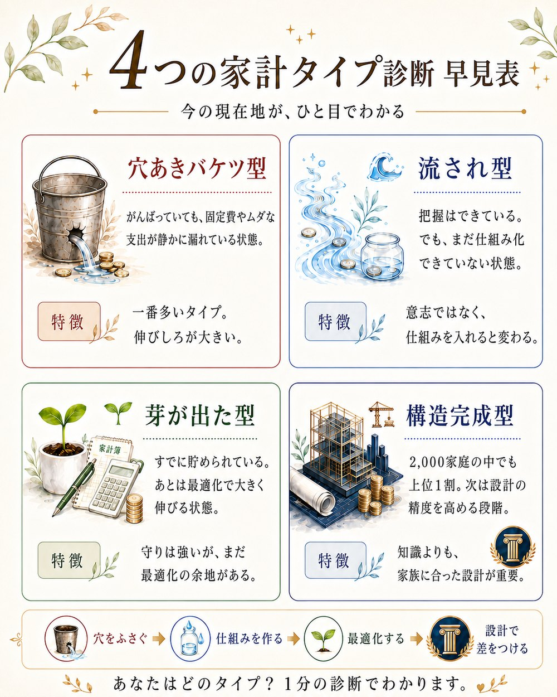

お金が貯まらない理由は、人によって全然ちがいます。
2,000件の相談から見えたのは、たった4つのタイプでした。

4つのタイプと、その並び順
たとえば、穴のあいたバケツに水を注いでも、たまりません。
投資を始める前に、ふさぐべき穴がある。
仕組みを作る前に、把握すべき現在地がある。
だから最初にやることは、増やし方を学ぶことではなく、
今どこに立っているかを知ることです。
いつでもブロックできます。しつこい営業はしません。
fulfull株式会社 代表／お金の先生
「うちにはお金がないから」と、子どもの夢を諦めさせた過去があります。 そこからお金を学び直し、今では家族のことでお金に困ることがなくなりました。
親がお金を学ぶことは、子どもに自由を贈ること。
同じ場所で立ち止まっている方に、まず現在地を渡したくてこの診断を作りました。